Procore Portfolio Management · Control Tower · In build
Case study
Portfolio AI for owners
Screens use sample companies and sample data. This is the company-level design: a chatbot, executive summaries, and risk signals. Each answer stays inside the projects that person can open.
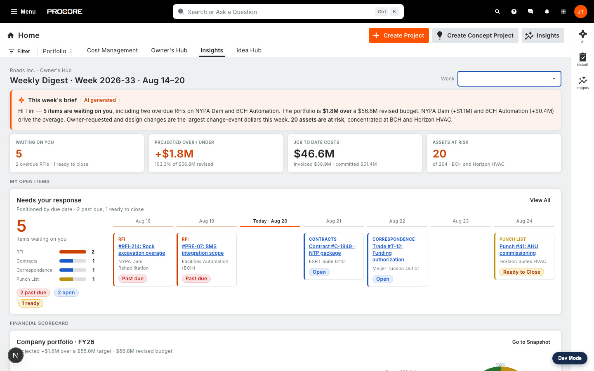
The challenge
Problem
An owner is responsible for many projects but works through tools built for one project at a time. To learn where the money is going, they open each project, compare budgets by hand, and chase project managers for status. The project-level AI panel could answer questions about one job. It could not tell an owner which of their jobs needed attention this week.
How I framed it
Approach
I treated the portfolio as one week, told the same way on every surface. The brief, the numbers, and the recommended actions match whether the owner reads them in Procore, in an email, on a web page, or on a phone. Five rules shaped every screen.
- Access follows the person. Each answer is built from the projects and tools that person can open. Projects outside that set are not listed, and they are not counted.
- Written summaries are labeled. The brief carries an AI Generated tag. The figures under it come straight from Procore tools.
- Every recommendation has an owner. Each action names the responsible project manager and a due date, so the owner knows who to call.
- Outside information stays outside. Weather, labor, and material signals are marked as such, and none of them is written into a budget or schedule.
- Admins grant access. They do not write answers. Permission templates and a named deny control who can ask. The system checks access on every question.
Context
Company Home
Company Home is where the AI features live. Its tabs already split the portfolio by job: projects, cost, the owner’s view, and longer-range budget and schedule trends. Instead of adding a separate AI destination, I put Summarize on the existing cards and added Insights as a peer tab.
Portfolio
The default tab pairs daily-log pace with My Open Items above the project list. Each card has its own Summarize control, so a summary always refers to the card it sits on.
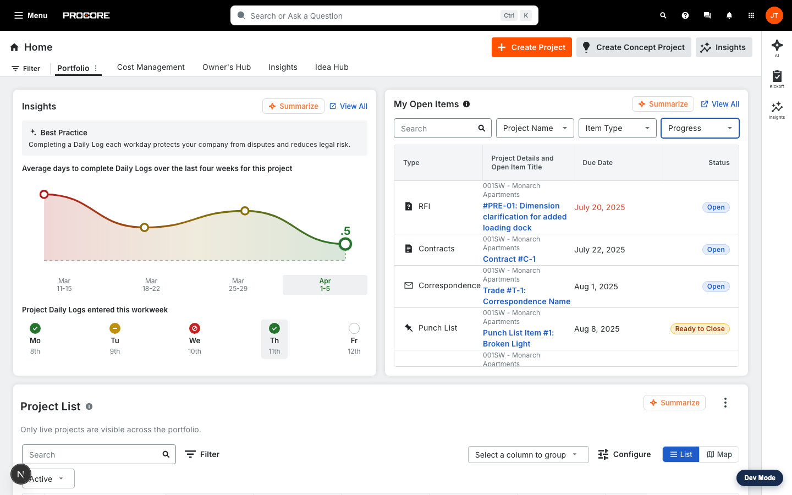
Cost Management
The financial scorecard, change events by type, and project financials sit together. This is the data the digest pulls its four headline numbers and overage drivers from.
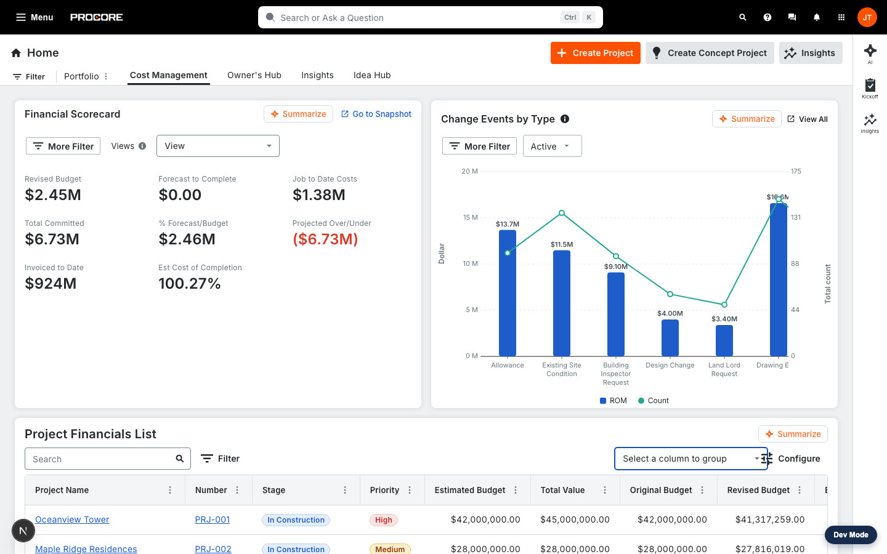
Owner’s Hub
The owner’s view keeps open items beside the project breakdown by stage, followed by assets and daily-log insights. Decisions and portfolio shape are on one screen.
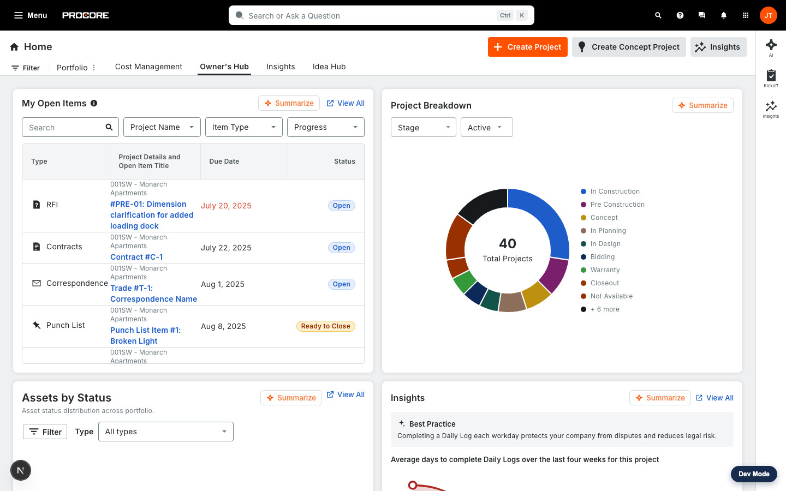
Idea Hub
Planned budget against actuals and forecast over 12 months: $230M planned, $240M actual and forecast, $10M (4.3%) over plan. Project health and budget-and-schedule views follow, so late projects and over-budget projects are found in one place.
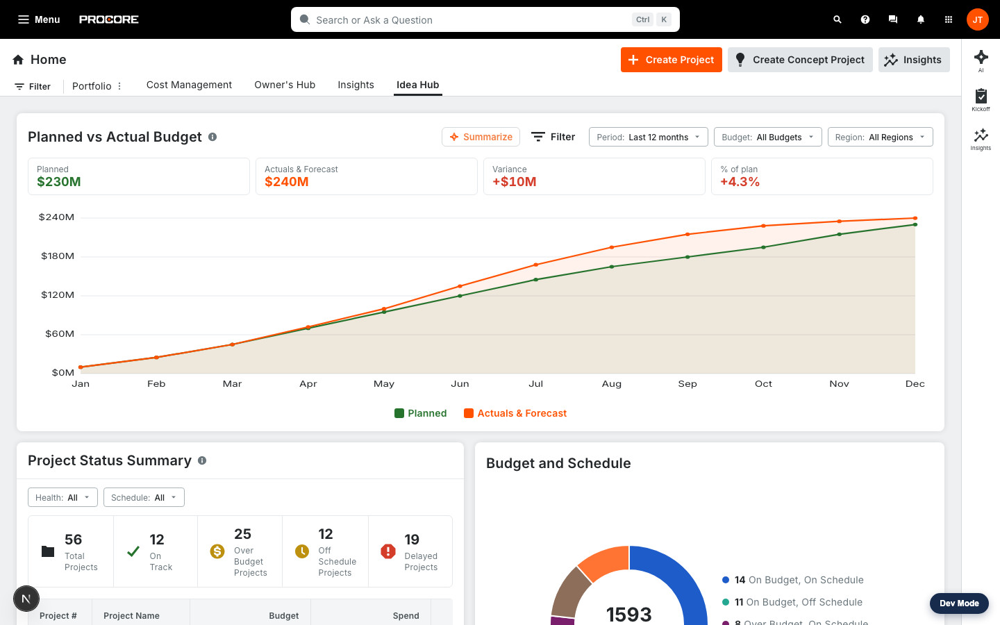
01
Company Ask
The project panel became a company panel on Company Home. The hardest design problem was the answer itself: a person might read Budget on some projects and not on others, and the response had to stay accurate without revealing what was held back. The scope line under the panel title shows only what the person can open, for example “12 projects you can open · Financials on 4”.
Ready. The panel opens with a greeting and three suggested questions taken from the most common company-level asks. Onboarding for first-time users explains what Datagrid does before the first question.
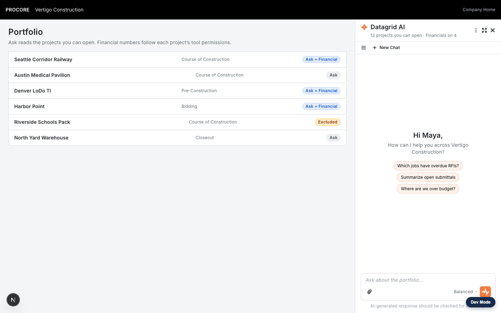
Mixed access
“Which jobs are over budget this month?” The answer names four projects with amounts, because the person can open Budget on each. A confidential project, and any project they cannot open, is left out without a count.
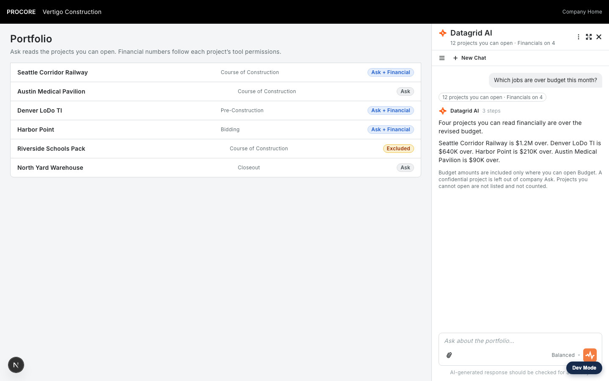
No financial access
The panel still answers from RFIs, submittals, and daily logs, and says Budget amounts are not included. It never estimates a number.
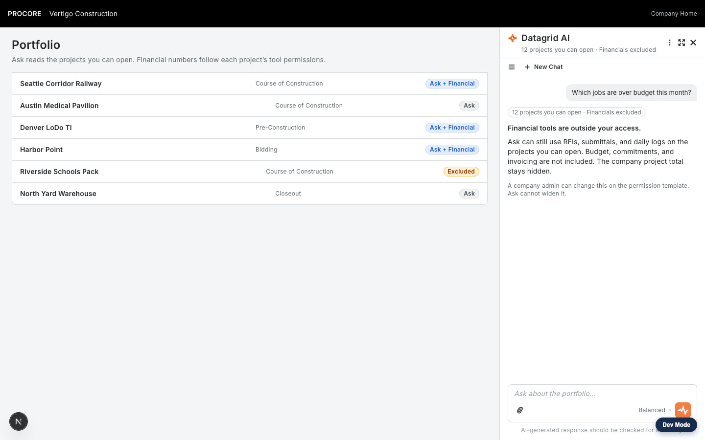
Ask not granted
A person without Ask on their permission template sees Request Access. The composer stays closed until a company admin grants it.
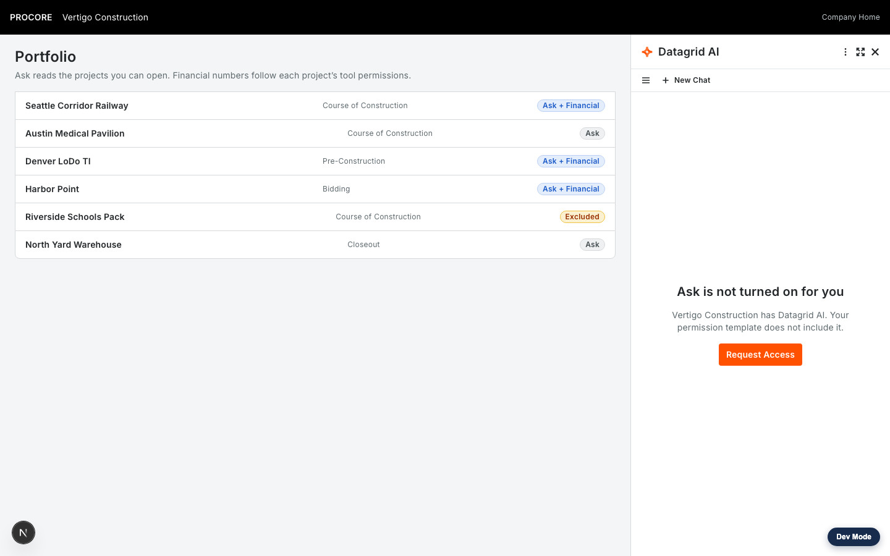
02
Insights tab
Insights is a peer tab on Company Home that holds the executive summary for a chosen week. I split the page into two kinds of content. Status is something to read. An action is something the owner needs to decide, and it comes with a recommendation and a responsible project manager.
The AI brief comes first and names the two projects driving the $1.8M overage. Four numbers follow: items waiting, projected over/under, job-to-date cost, and assets at risk. Open items sit on a due-date line, with past-due items to the left of today.
Each action card carries priority, category, and timing, then a recommended next step and the responsible project manager, with one button to review. The week’s five actions cover a notice to proceed, a funding authorization, two contingency draws, and a capacity deferral.
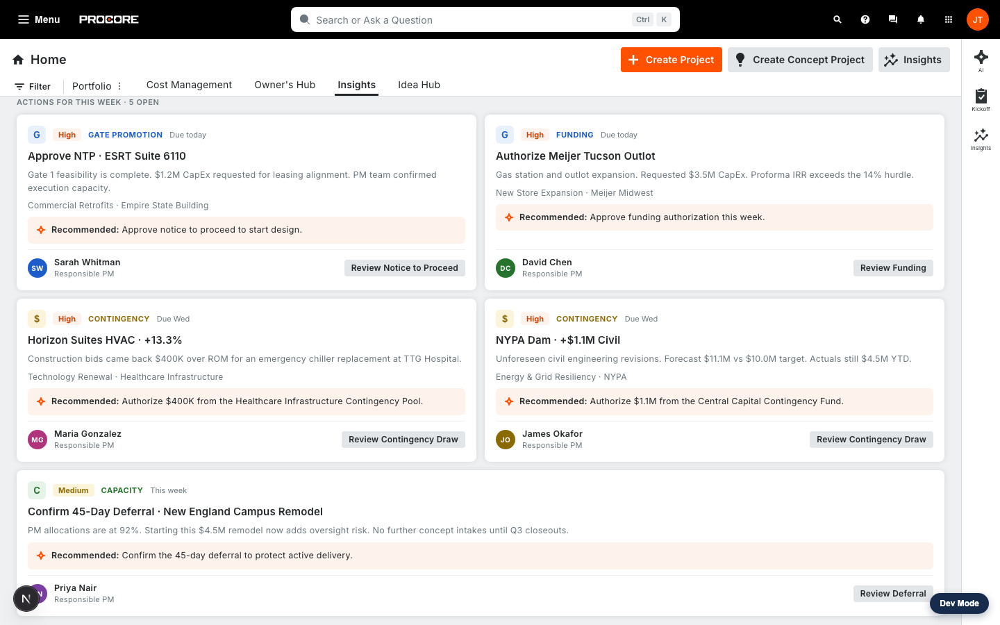
03–04
Digest email
Many owners start the day in their inbox, so the week has to arrive there. The subject line carries the two facts that matter, the number of items waiting and the overage, so the email is useful before it is opened. The email repeats the Insights brief and the four numbers, then lists open items overdue-first. Each item links to its record in Procore, and the footer opens the full portfolio.
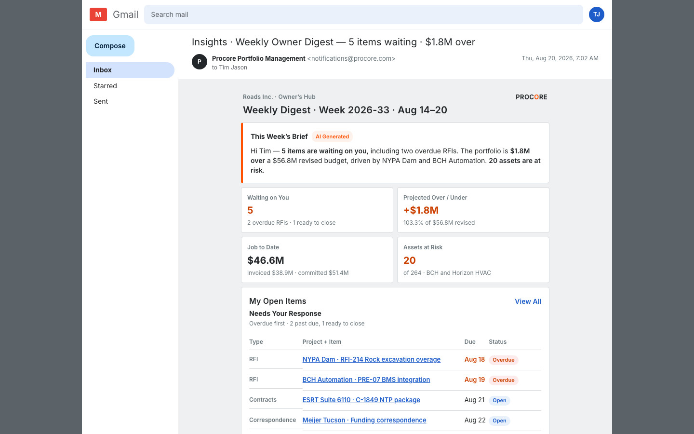
Digest settings
Company admins control the digest from Company Settings. Default sends the full weekly email on a fixed schedule. Customized unlocks cadence, recipients, and each section, so a company can send a shorter email or send it more often. With Default selected, cadence, audience, and recipients appear but cannot be edited.
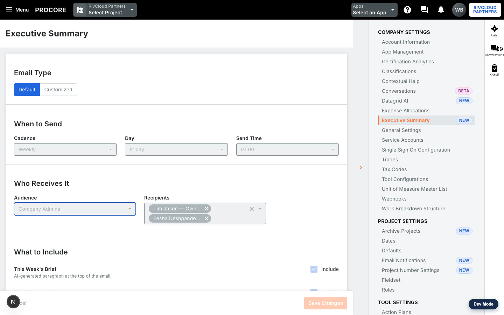
Each digest section matches a card the owner already knows from Home: brief, open items, scorecard, project financials, change events, assets, and more. Industry signals can be turned on as a separate section.
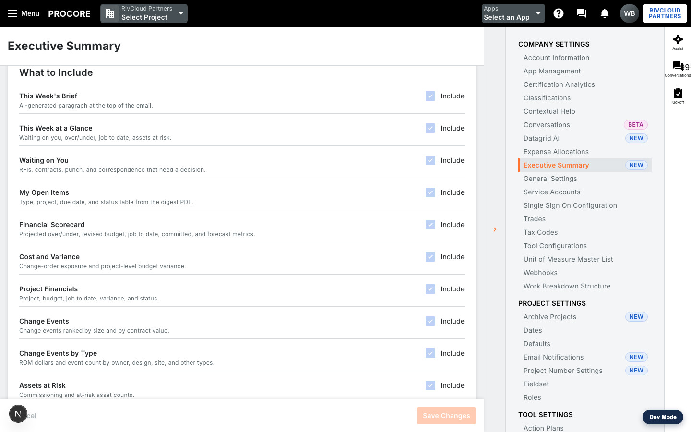
05–06
External page and mobile
The email links to a web version of the digest with the assistant beside it, so an owner can ask a follow-up without signing in to Procore. The page follows the same access rules as Company Ask, and the link expires. Asked why the portfolio is $1.8M over, the assistant names the three projects behind it with their variances. The digest stays on the left, so the answer can be checked against the scorecard.
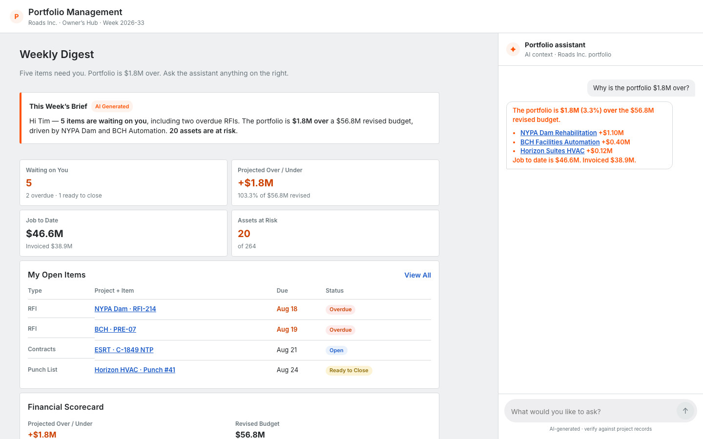
The same link opens a mobile layout. Owners are often on site or between meetings, so the composer has voice input next to it. The context line shows which portfolio the answer comes from. The answer is the same three projects as the web page, because both read the same digest and the same access.
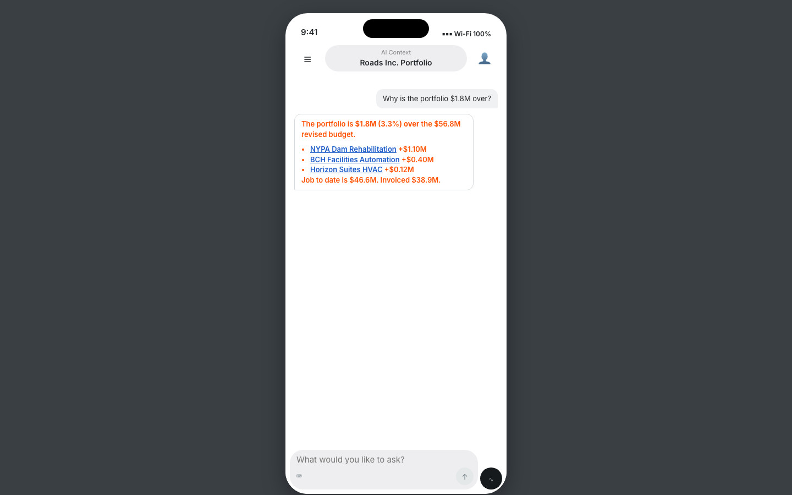
07
Card summaries
Summarize is one control repeated on the cards of every Home tab. It asks the question for that card and answers in the side panel, so the summary sits next to the data it describes. Follow-up questions continue in the same panel. Summarizing the Insights card returns active projects, daily-log completion below target, safety notes, and a recommended focus for the week. A cost card would summarize the scorecard instead. Each summary covers only that card.
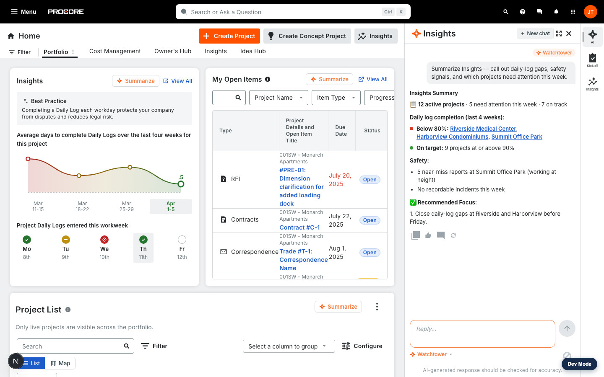
08
Outside signals
Budget and schedule risk often starts outside Procore. Insights adds a short set of signals from public weather, labor, and material sources, and shows one only when it can affect a project the person can open. Each card answers the same questions: why it is happening, what it can affect, what to do, who acts, and how confident the signal is. Rain at a dam site is high confidence. A labor shortage and a copper price move are medium. Signals are labeled Outside Procore and never written to budget or schedule.
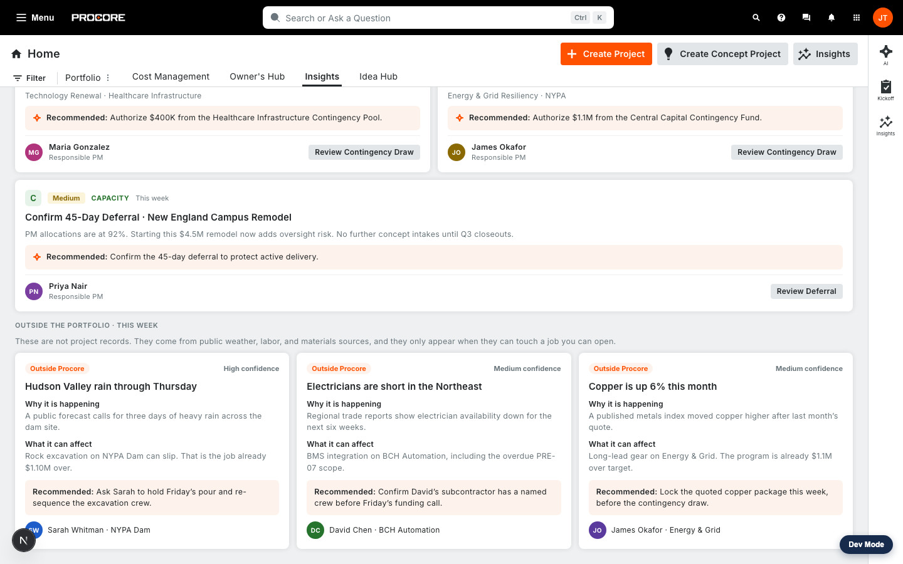
Permissions
Access and spend
Company admins grant Ask through permission templates: None, Ask, or Ask + Financial. A named deny overrides the template, and collaborators stay off unless an admin names them. Financial answers can only narrow Procore tool permissions. They never widen them. Company data sync decides whether Ask can read project records at all.
The Access tab shows sync status and one row per person: Ask level, monthly cap, and usage, plus a pause control. Nowhere on the page does it show how many projects the company has.
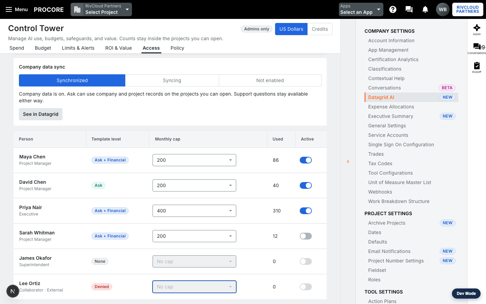
Spend is shown in dollars or credits, with one switch. It covers the month against target, daily pace, the hours Deep Search returned to the team, and cost by agent. The activity log lists only projects the admin can open.
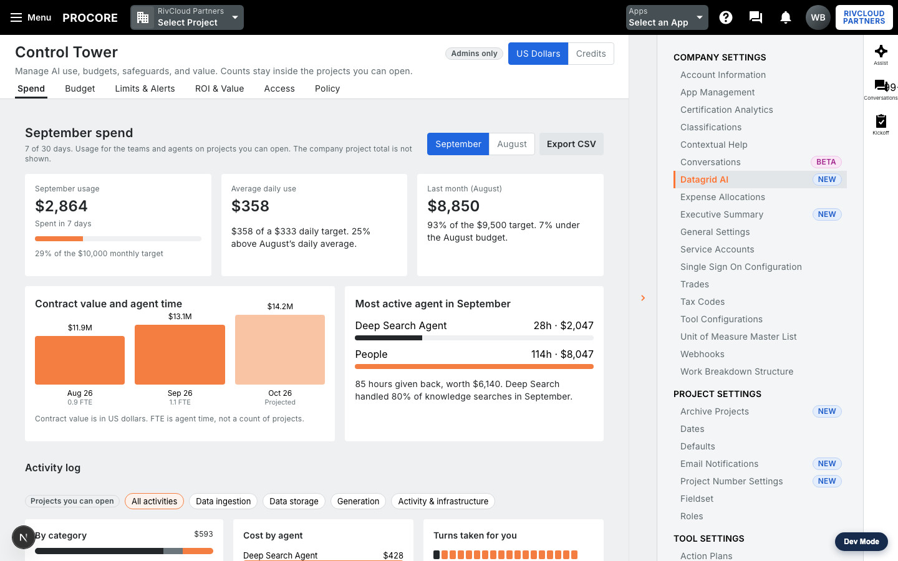
Two stops protect spend. The company pool pauses everyone when credits run out. A personal cap pauses one person. Alerts fire at 80% of the monthly target and when a day runs 25% above last month.
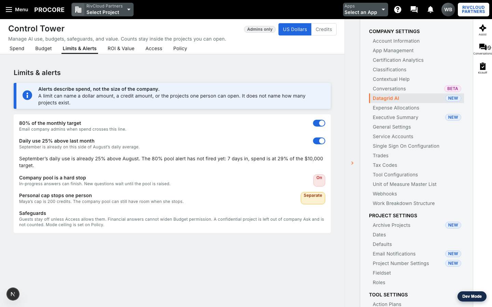
Blocked states
Edge cases
Each blocked state tells the person what happened and what they can do next, and the composer only accepts a question when it can be answered.
Credits used up
New questions pause for everyone. Running work finishes, and the panel offers Talk to Sales.
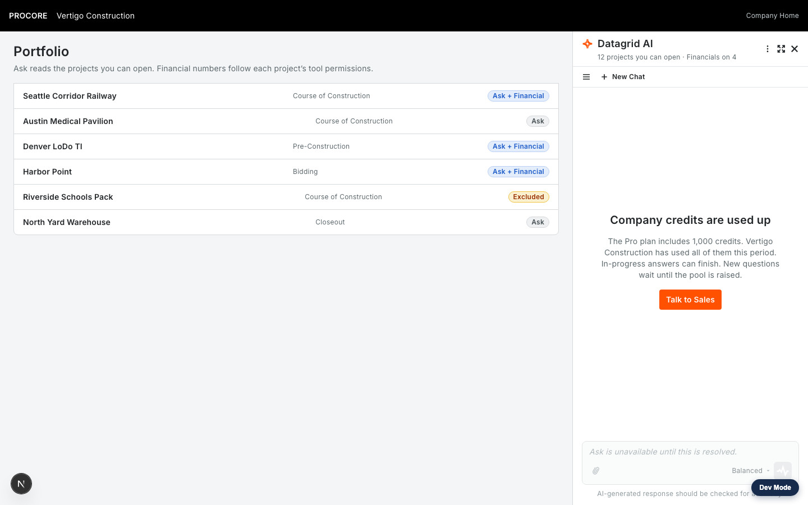
No Datagrid account
Error DG-201 points to Contact Support, because there is no access to request.
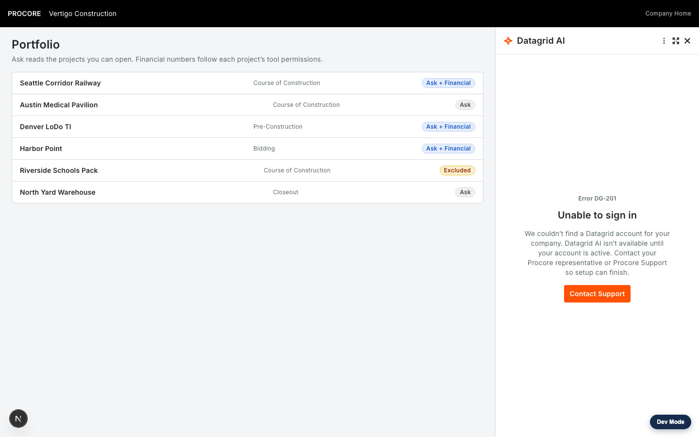
Situation
Company sync still running
Some projects lack Budget access
Personal cap reached
Digest forwarded to someone else
Email link expired
Connection or server error
What the person sees
Support questions only. Project answers start when sync completes.
Amounts appear only where Budget opens. There is no count of hidden projects.
That person pauses until next month or until an admin raises the cap.
The page follows the reader’s own access, not the original recipient’s.
The page explains that a new digest arrives on the next send.
A clear error with Reload. The question is kept in the composer.
Screens use sample companies and sample data from the Procore portfolio prototype.